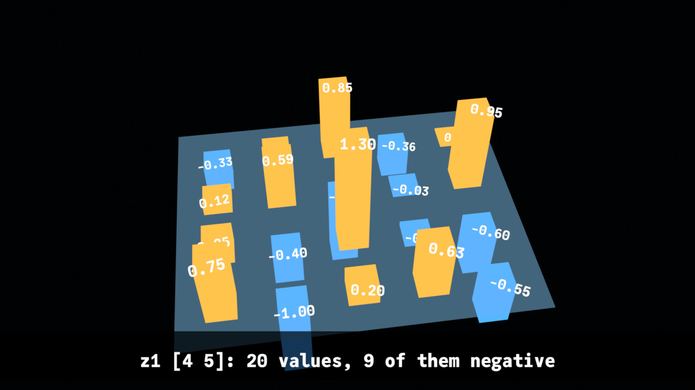
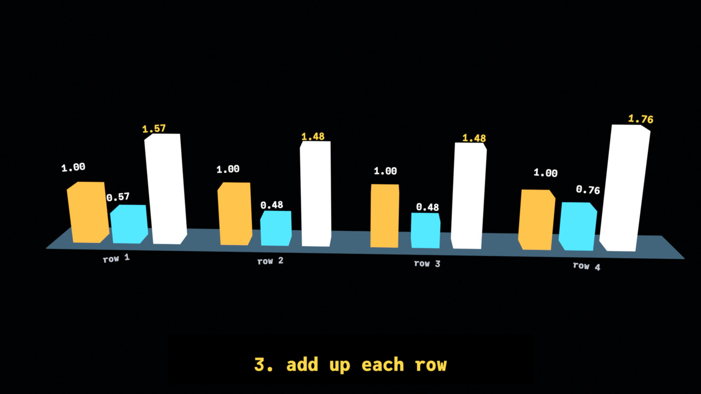
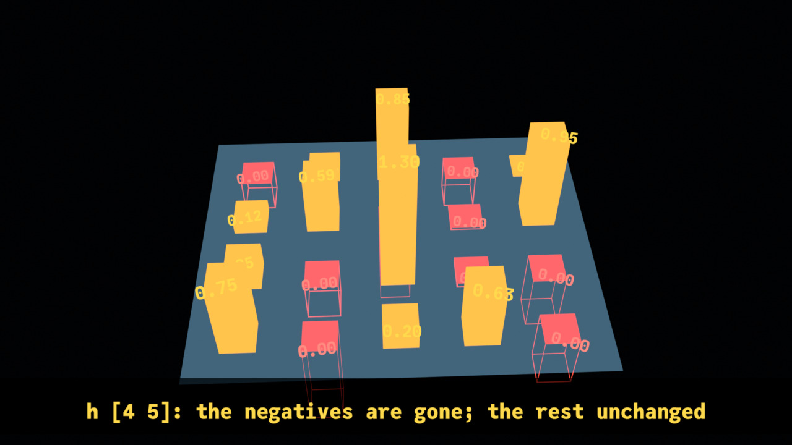
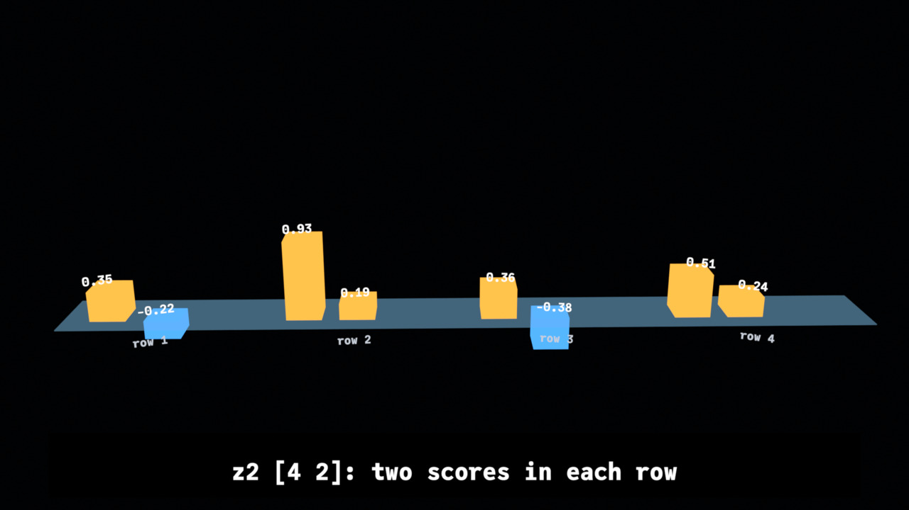
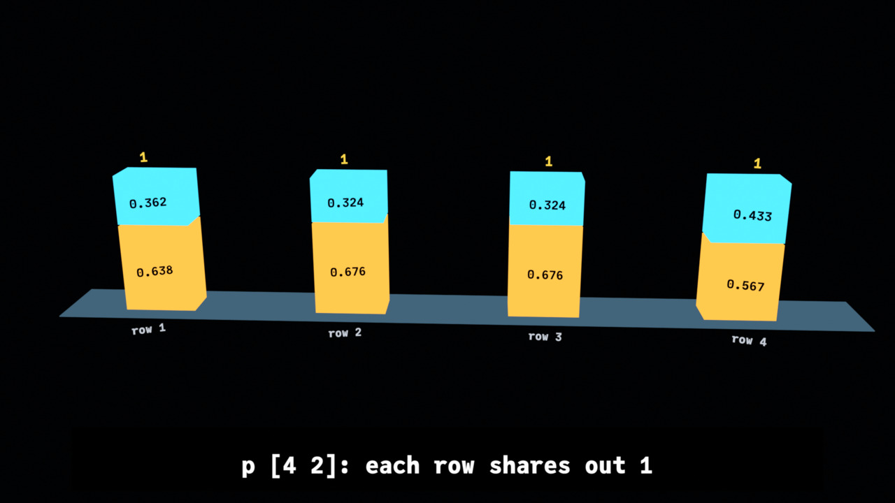

ReLU and softmax, arrays to video
a tiny network's last steps, from X_eTaL arrays to Python to Blender to an MP4, with no hand-written Python
Table of Contents
- Purpose: what the video shows, and why
- The chain: X_eTaL, Python, Blender, video
- 1. The arrays, by Accel
- 2. Softmax a step at a time
- 3. Animation, at a high level
- 4. Animation, in detail: ReLU
- 5. Animation, in detail: softmax
- 6. Captions and the camera
- 7. From tables to Python
- 8. The player: what Blender runs
- 9. Rendering
A neural network's layers are array operations: multiply by weights, add a bias, then a function applied to every value. Two of those functions turn up everywhere. ReLU keeps positive values and makes every negative one 0. Softmax turns a row of scores into shares that add up to 1 – how sure the network is of each answer. This document shows a 30-second video of both, made from a real network's arrays, and how every part of the video comes from X_eTaL.

Purpose: what the video shows, and why
The network is X_eTaL-gpu's tiny-net: four examples of three inputs, a dense layer of five with ReLU, a dense layer of two with softmax. X_eTaL-gpu compiles the same X_eTaL functions – its Accel library – to run on Apple and NVIDIA GPUs and checks the GPU's answers against the X_eTaL evaluator. Here the evaluator runs them, and the arrays it gives are drawn:
- 0 to 11 s, ReLU. The first layer's output z1 (4 by 5) stands as bars on a glass floor: positive values orange and up, negative ones blue and hanging below. The negatives turn red and shrink to 0, leaving their outlines; what is left is h, ReLU's output.
- 11.5 to 30 s, softmax. The second layer's output z2 (4 by 2), a row of two scores for each example, stands as four groups of two bars. Softmax's four steps happen to all of them at once: subtract each row's largest, raise e to each value, add up each row (a white bar), divide by the sum. Each row ends as one column of its two shares, every column 1 tall.
The point for a reader is the shape of the computation – which values change, which do not, and why softmax's results add up to 1 – told by the arrays themselves rather than by a listing.
The chain: X_eTaL, Python, Blender, video
Nothing in the chain is written by hand for this video:
- X_eTaL works out the arrays. The network's layers are X_eTaL-gpu's
Accel library (
ac:d_ense,ac:r_elu,ac:s_oftmax,ac:r_owMax,ac:r_owSums), pinned at a known commit (GPU_COMMIT). - X_eTaL works out the video.
extensions/blender/demos/ReluSoftmax.xtlturns those arrays into more arrays: every bar's place and size at every key, every color, the seconds each thing is shown, the camera's path, the captions' words. This is the only part made for this video. - X_eTaL writes the Python. The blender extension's
Video.xtl(aliasvd:) turns each table into one line of Python: a call such asmoves('z1', times, rows)with every number written out. Its player, the Python those calls run, is fixed text in the library, the same for every video, tested on its own; it decides nothing. - Blender runs it. The blender extension's
bl:r_un!runs Blender in the background on the script; the player makes the objects and keys, and Blender's EEVEE renders 901 frames as an MP4.
The same arrays always give the same script, byte for byte.
1. The arrays, by Accel
The library imports Accel and the Video library; this document imports the library:
ʳˢ⁼u̲se< "ReluSoftmax" ᵃᶜ⁼u̲se< "Accel" ᵛᵈ⁼u̲se< "Video" s̲hape ʳˢx ⍝ typed: ⍝ "rs:" u_se< "ReluSoftmax" ⍝ "ac:" u_se< "Accel" ⍝ "vd:" u_se< "Video" ⍝ s_hape rs:x
4 3
The input x is four examples of three features. The weights are X_eTaL-gpu's data files, a row per input and the bias as the last row:
ˡx ← 4 3 r̲eshape 0.5 -1.0 0.25 1.0 0.0 -0.5 -0.75 0.5 1.0 0.2 0.4 -0.6 ⍝ typed: ⍝ l:x := 4 3 r_eshape 0.5 -1.0 0.25 1.0 0.0 -0.5 -0.75 0.5 1.0 0.2 0.4 -0.6
ˡw1 ← 4 5 r̲eshape 0.5 -0.25 0.75 0.1 -0.6 -0.3 0.8 0.2 -0.5 0.4 0.6 0.1 -0.7 0.3 0.2 0.05 -0.1 0.2 0.0 0.1 ⍝ typed: ⍝ l:w1 := 4 5 r_eshape 0.5 -0.25 0.75 0.1 -0.6 -0.3 0.8 0.2 -0.5 0.4 0.6 0.1 -0.7 0.3 0.2 0.05 -0.1 0.2 0.0 0.1
ˡw2 ← 6 2 r̲eshape 0.7 -0.4 -0.2 0.9 0.5 0.3 -0.6 0.2 0.3 -0.8 0.1 -0.1 ⍝ typed: ⍝ l:w2 := 6 2 r_eshape 0.7 -0.4 -0.2 0.9 0.5 0.3 -0.6 0.2 0.3 -0.8 0.1 -0.1
The first layer is ac:d_ense – x times the weights, plus the bias row
spread down the batch – and ReLU follows it:
ˡz1 ← ˡx ᵃᶜd̲ense ˡw1 ⍝ typed: ⍝ l:z1 := l:x ac:d_ense l:w1
ˡh ← ᵃᶜr̲elu ˡz1 ⍝ typed: ⍝ l:h := ac:r_elu l:z1
ʳˢz1 ⍝ typed: ⍝ rs:z1
0.75 -1.0 0.2 0.625 -0.55
0.25 -0.4 1.3 -0.04999999999999999 -0.6
0.12499999999999996 0.5875 -0.9625000000000001 -0.025000000000000022 0.95
-0.33 0.11000000000000007 0.8500000000000001 -0.36 0.020000000000000046
ʳˢh ⍝ typed: ⍝ rs:h
0.75 0.0 0.2 0.625 0.0
0.25 0.0 1.3 0.0 0.0
0.12499999999999996 0.5875 0.0 0.0 0.95
0.0 0.11000000000000007 0.8500000000000001 0.0 0.020000000000000046
ReLU changed only the negatives. How many there are, and that the rest are untouched:
'+ r̲/ (r̲avel ʳˢz1) < 0.0 ⍝ typed: ⍝ '+ r_/ (r_avel rs:z1) < 0.0
9
'+ r̲/ r̲avel a̲bs (ʳˢz1 − ʳˢh) × f̲loat ʳˢz1 ≥ 0.0 ⍝ typed: ⍝ '+ r_/ r_avel a_bs (rs:z1 - rs:h) * f_loat rs:z1 >= 0.0
0.0
The second layer gives two scores for each example, and softmax turns each row into shares of 1:
ˡz2 ← ˡh ᵃᶜd̲ense ˡw2 ⍝ typed: ⍝ l:z2 := l:h ac:d_ense l:w2
ˡp ← ᵃᶜs̲oftmax ˡz2 ⍝ typed: ⍝ l:p := ac:s_oftmax l:z2
ʳˢz2 ⍝ typed: ⍝ rs:z2
0.34999999999999987 -0.21500000000000005
0.9249999999999999 0.19000000000000003
0.355 -0.38125
0.509 0.23800000000000002
ʳˢp ⍝ typed: ⍝ rs:p
0.637608652621925 0.362391347378075 0.6759015277259407 0.32409847227405936 0.6761752908117927 0.3238247091882072 0.5673383870169968 0.4326616129830031
ᵃᶜr̲owSums ʳˢp ⍝ typed: ⍝ ac:r_owSums rs:p
1.0 1.0 1.0 0.9999999999999999
2. Softmax a step at a time
ac:s_oftmax is one expression. To show its steps the library writes
them out with Accel's own pieces – ac:r_owMax, ac:r_owSums – and
checks that they give ac:s_oftmax's answer:
ʰa̲long ← { v m → v 'l̲eft t̲able o̲ffsets f̲irst -1 t̲ake s̲hape m } ⍝ typed: ⍝ h:a_long := { v m -> v 'l_eft t_able o_ffsets f_irst -1 t_ake s_hape m }
ˡs̲hifted ← { m → m − (ᵃᶜr̲owMax m) ʰa̲long m } ⍝ typed: ⍝ l:s_hifted := { m -> m - (ac:r_owMax m) h:a_long m }
ˡe̲xps ← { m → e̲xp ˡs̲hifted m } ⍝ typed: ⍝ l:e_xps := { m -> e_xp l:s_hifted m }
ˡs̲ums ← { m → ᵃᶜr̲owSums ˡe̲xps m } ⍝ typed: ⍝ l:s_ums := { m -> ac:r_owSums l:e_xps m }
ˡshares ← (ˡe̲xps ˡz2) ÷ (ˡs̲ums ˡz2) ʰa̲long ˡz2 ⍝ typed: ⍝ l:shares := (l:e_xps l:z2) / (l:s_ums l:z2) h:a_long l:z2
Each row less its largest: the largest becomes 0, the other negative. This changes nothing in the answer (e to a difference is a ratio) and keeps e from overflowing:
ʳˢs̲hifted ʳˢz2 ⍝ typed: ⍝ rs:s_hifted rs:z2
0.0 -0.565 0.0 -0.7349999999999999 0.0 -0.73625 0.0 -0.271
e to each: every value positive, each row's largest exactly 1:
ʳˢe̲xps ʳˢz2 ⍝ typed: ⍝ rs:e_xps rs:z2
1.0 0.5683601467575405 1.0 0.47950545897489416 1.0 0.47890645160877504 1.0 0.7626164964050653
Each row's sum, and each value divided by it:
ʳˢs̲ums ʳˢz2 ⍝ typed: ⍝ rs:s_ums rs:z2
1.5683601467575405 1.4795054589748942 1.478906451608775 1.7626164964050655
'+ r̲/ r̲avel a̲bs ʳˢshares − ʳˢp ⍝ typed: ⍝ '+ r_/ r_avel a_bs rs:shares - rs:p
0.0

3. Animation, at a high level
A video here is a timeline of groups of objects. Every object is a box or a word; a group is one kind of thing – z1's twenty bars, their twenty labels, the outlines of the nine removed values. For each group the program gives tables, one row an object:
- what it is at the start: a box's middle and size and color, a word's place, height and color;
- when it is shown: a span, from one second to another;
- its keys: at each of a few times, its place and size; between keys Blender eases from one to the next (Bezier), so a bar shrinks smoothly;
- its tints: at each of a few times, its color;
- and, for the whole video, the camera's keys – where it is and what it looks at – and the captions, each with its span.
That is all an animation is here: no physics, no simulation, nothing Blender decides. Everything moves because a table says where it is at which second.
The timing is an array too. ReLU runs from 0 to 11 s; softmax's steps start at these seconds, and the video ends at 30:
ˡsteps ← 11.5 15.0 18.0 21.0 23.5 26.0 ⍝ typed: ⍝ l:steps := 11.5 15.0 18.0 21.0 23.5 26.0
ˡends ← 30.0 ⍝ typed: ⍝ l:ends := 30.0
4. Animation, in detail: ReLU
The cells of z1 stand 1.4 m apart on the floor, a row of z1 a row of the floor, the whole stage about x -12 (softmax's is about x 0, so the camera can glide from one to the other):
ˡcellX ← 4 5 r̲eshape ox + gap × (f̲loat r̲ange 5) − 3.0 ⍝ typed: ⍝ l:cellX := 4 5 r_eshape ox + gap * (f_loat r_ange 5) - 3.0
ˡcellY ← (gap × f̲loat (r̲ange 4) − 1) 'l̲eft t̲able r̲ange 5 ⍝ typed: ⍝ l:cellY := (gap * f_loat (r_ange 4) - 1) 'l_eft t_able r_ange 5
ʳˢcellX ⍝ typed: ⍝ rs:cellX
-14.8 -13.4 -12.0 -10.6 -9.2 -14.8 -13.4 -12.0 -10.6 -9.2 -14.8 -13.4 -12.0 -10.6 -9.2 -14.8 -13.4 -12.0 -10.6 -9.2
A bar is a box: its middle (x y z) and its size (w d h). A bar of value v is v times 2.2 m tall; standing on the floor its middle is at half its height, and a negative height puts it below the floor. The library works out every bar at once, a row of six numbers each:
ˡb̲ars ← { (bx, by, hh, w) z → ⍝ typed: ⍝ l:b_ars := { (bx, by, hh, w) z ->
(0.0 1.0, 0.0 0.0, 2.0 -1.0, 0.5) ʳˢb̲ars 0 ⍝ typed: ⍝ (0.0 1.0, 0.0 0.0, 2.0 -1.0, 0.5) rs:b_ars 0
0.0 0.0 1.0 0.5 0.5 2.0 1.0 0.0 -0.5 0.5 0.5 1.0
ReLU is three keys for each bar: at 0 s and 4 s the bar is z1's value, at 5.6 s it is ReLU's – 0 for a negative, the same for the rest. The three tables, one under another, become one array of 20 bars by 3 keys by 6 numbers:
ˡk̲eyed ← { k tabs → ⍝ typed: ⍝ l:k_eyed := { k tabs ->
p0 ← (r̲avel ʳˢcellX, r̲avel ʳˢcellY, 2.2 × r̲avel ʳˢz1, 0.62) ʳˢb̲ars 0 p1 ← (r̲avel ʳˢcellX, r̲avel ʳˢcellY, 2.2 × ᵃᶜr̲elu r̲avel ʳˢz1, 0.62) ʳˢb̲ars 0 keys ← 3 ʳˢk̲eyed p0 c̲at p0 c̲at p1 s̲hape keys ⍝ typed: ⍝ p0 := (r_avel rs:cellX, r_avel rs:cellY, 2.2 * r_avel rs:z1, 0.62) rs:b_ars 0 ⍝ p1 := (r_avel rs:cellX, r_avel rs:cellY, 2.2 * ac:r_elu r_avel rs:z1, 0.62) rs:b_ars 0 ⍝ keys := 3 rs:k_eyed p0 c_at p0 c_at p1 ⍝ s_hape keys
20 3 6
The second bar is z1's -1.0: below the floor until 4 s, then a sliver (0.004 m) at 5.6 s:
2 s̲elect keys ⍝ typed: ⍝ 2 s_elect keys
-13.4 0.0 -1.1 0.62 0.62 2.2 -13.4 0.0 -1.1 0.62 0.62 2.2 -13.4 0.0 0.0 0.62 0.62 0.004
Its color is keyed the same way: blue until 3 s, red by 3.6 s, so the eye goes to the values about to go. Colors are picked from a mask – one where the value is negative – as arrays:
neg ← (r̲avel ʳˢz1) < 0.0 3 t̲ake ((f̲loat neg) '× t̲able f̲loat ʳˢred) + (1.0 − f̲loat neg) '× t̲able f̲loat ʳˢorange ⍝ typed: ⍝ neg := (r_avel rs:z1) < 0.0 ⍝ 3 t_ake ((f_loat neg) '* t_able f_loat rs:red) + (1.0 - f_loat neg) '* t_able f_loat rs:orange
255.0 179.0 71.0 255.0 74.0 61.0 255.0 179.0 71.0
The whole ReLU part is one function: a glass floor, the bars with their keys, tints and span, red outlines where the negatives were (shown from 5.6 s), z1's values over the bars (0.5 to 5 s) and h's after (6 to 11 s):
ˡr̲eluScript ← { z → ⍝ typed: ⍝ l:r_eluScript := { z ->

5. Animation, in detail: softmax
Each row's two bars stand side by side in their own group, 4.4 m apart, so no bar hides another:
ˡgroupX ← gw × (f̲loat r̲ange 4) − 2.5 ⍝ typed: ⍝ l:groupX := gw * (f_loat r_ange 4) - 2.5
ˡbarX ← (ˡgroupX − 0.9) '+ t̲able 0.0 1.2 ⍝ typed: ⍝ l:barX := (l:groupX - 0.9) '+ t_able 0.0 1.2
ʳˢbarX ⍝ typed: ⍝ rs:barX
-7.500000000000001 -6.300000000000001
-3.1 -1.9000000000000001
1.3000000000000003 2.5
5.7 6.9
A score's bar has seven keys: the score, held until the shift, the shifted score, held until the e's, the e, held until the division, the share. Holding a value (two keys with the same value a second apart) is what makes each step a pause, then a move. Each row's sum is a white bar beside its two, shown from the sum's step to just after the division. The result is a column per row: its two shares stacked, the first on the floor, the second on top of it, so every column stands 3.2 m – 1 – tall:
ˡs̲oftmaxScript ← { z → ⍝ typed: ⍝ l:s_oftmaxScript := { z ->
ʰv̲alues ← { (name, v, i, j, less, bx) z → ⍝ typed: ⍝ h:v_alues := { (name, v, i, j, less, bx) z ->


6. Captions and the camera
The captions are words with spans and colors. Their numbers – the shapes, how many values are negative – are the arrays', so a caption cannot disagree with what it shows:
ʰs̲hape ← { name a → name c̲at " [" c̲at (f̲ormat s̲hape a) c̲at "]" } ⍝ typed: ⍝ h:s_hape := { name a -> name c_at " [" c_at (f_ormat s_hape a) c_at "]" }
ˡcaptionTexts ← (("z1" ʰs̲hape ˡz1) c̲at ": " c̲at (f̲ormat t̲ally r̲avel ˡz1) c̲at " values, " c̲at (f̲ormat '+ r̲/ (r̲avel ˡz1) < 0.0) c̲at " of them negative|" c̲at "relu: every negative becomes 0|" c̲at ("h" ʰs̲hape ˡh) c̲at ": the negatives are gone; the rest unchanged|" c̲at ("z2" ʰs̲hape ˡz2) c̲at ": two scores in each row|" c̲at "1. subtract each row's largest|2. exp: every value positive, the largest 1|3. add up each row|4. divide by the sum|" c̲at ("p" ʰs̲hape ˡp) c̲at ": each row shares out 1") ⍝ typed: ⍝ l:captionTexts := (("z1" h:s_hape l:z1) c_at ": " c_at (f_ormat t_ally r_avel l:z1) c_at " values, " c_at (f_ormat '+ r_/ (r_avel l:z1) < 0.0) c_at " of them negative|" c_at ⍝ "relu: every negative becomes 0|" c_at ⍝ ("h" h:s_hape l:h) c_at ": the negatives are gone; the rest unchanged|" c_at ⍝ ("z2" h:s_hape l:z2) c_at ": two scores in each row|" c_at ⍝ "1. subtract each row's largest|2. exp: every value positive, the largest 1|3. add up each row|4. divide by the sum|" c_at ⍝ ("p" h:s_hape l:p) c_at ": each row shares out 1")
ˡc̲aptionTable ← { z → ⍝ typed: ⍝ l:c_aptionTable := { z ->
ʳˢcaptionTexts ⍝ typed: ⍝ rs:captionTexts
z1 [4 5]: 20 values, 9 of them negative|relu: every negative becomes 0|h [4 5]: the negatives are gone; the rest unchanged|z2 [4 2]: two scores in each row|1. subtract each row's largest|2. exp: every value positive, the largest 1|3. add up each row|4. divide by the sum|p [4 2]: each row shares out 1
The camera has four keys: above the ReLU stage at the start, the same a little moved at 10.5 s, back from the softmax stage by 12 s (wide enough for its four groups), and drifting until 30 s:
ˡc̲ameraKeys ← { z → ⍝ typed: ⍝ l:c_ameraKeys := { z ->
Every color is checked against the near-black sky for contrast (WCAG: 7 or more reads easily). The gray of the row names, the dimmest, is 12.3 (written ten times over here, to keep a whole number):
f̲loor 10.0 × ʳˢgray ᵛᵈc̲ontrast ʳˢsky ⍝ typed: ⍝ f_loor 10.0 * rs:gray vd:c_ontrast rs:sky
123
7. From tables to Python
The scene is the stage, the two parts, the captions and the camera:
ˡs̲cene ← { (w, h) z → ⍝ typed: ⍝ l:s_cene := { (w, h) z ->
Each part is a string of Python calls. vd:m_oves is one of the
functions that write them: the times and the n by k by 6 array, every
number written out:
ˡm̲oves ← { (name, ts, p) z → ⍝ typed: ⍝ l:m_oves := { (name, ts, p) z ->
The ReLU bars' keys, as the script has them (the first 160 characters):
160 t̲ake ("z1", 0.0 4.0 5.6, keys) ᵛᵈm̲oves 0 ⍝ typed: ⍝ 160 t_ake ("z1", 0.0 4.0 5.6, keys) vd:m_oves 0
moves('z1', nums('0.0 4.0 5.6', 3)[0], nums('-14.8 0.0 0.8250000000000001 0.62 0.62 1.6500000000000001 -14.8 0.0 0.8250000000000001 0.62 0.62 1.6500000000000001
And the whole script, the player and then the calls, its length in characters and in lines, the same every time:
t̲ally (1920, 1080) ʳˢs̲cene 0 ⍝ typed: ⍝ t_ally (1920, 1080) rs:s_cene 0
36601
lines ← (n̲ot ((1920, 1080) ʳˢs̲cene 0) = f̲irst "\n") p̲artition (1920, 1080) ʳˢs̲cene 0 t̲ally lines ⍝ typed: ⍝ lines := (n_ot ((1920, 1080) rs:s_cene 0) = f_irst "\n") p_artition (1920, 1080) rs:s_cene 0 ⍝ t_ally lines
349
8. The player: what Blender runs
The player is the Python at the top of every script, vd:head: fixed
text in the library. Each call reads its numbers and does exactly what
they say. moves sets each object's place and size and keys them at
each time's frame; tints keys a material's color; shown keys
hide_render off at a span's start and on after its end; camera keys
the camera and the point it looks at:
ʰplayKeys ← ("def span(o, a, b):\n" c̲at " keys = {1: True, frame(a): False, frame(b) + 1: True} if a > 0 else {1: False, frame(b) + 1: True}\n" c̲at " for f in sorted(keys):\n" c̲at " o.hide_render = keys[f]\n" c̲at " o.keyframe_insert('hide_render', frame=f)\n" c̲at "\n" c̲at "def shown(name, rows):\n" c̲at " for o, r in zip(groups[name], rows):\n" c̲at " span(o, r[0], r[1])\n" c̲at "\n" c̲at "def moves(name, times, rows):\n" c̲at " for o, r in zip(groups[name], rows):\n" c̲at " for j, t in enumerate(times):\n" c̲at " o.location = r[6 * j:6 * j + 3]\n" c̲at " o.scale = r[6 * j + 3:6 * j + 6]\n" c̲at " o.keyframe_insert('location', frame=frame(t))\n" c̲at " o.keyframe_insert('scale', frame=frame(t))\n" c̲at "\n" c̲at "def moves_each(name, times, rows):\n" c̲at " for o, ts, r in zip(groups[name], times, rows):\n" c̲at " for j, t in enumerate(ts):\n" c̲at " o.location = r[6 * j:6 * j + 3]\n" c̲at " o.scale = r[6 * j + 3:6 * j + 6]\n" c̲at " o.keyframe_insert('location', frame=frame(t))\n" c̲at " o.keyframe_insert('scale', frame=frame(t))\n" c̲at "\n" c̲at "def tints(name, times, rows):\n" c̲at " for o, r in zip(groups[name], rows):\n" c̲at " s = o.data.materials[0].node_tree.nodes['glow'].inputs['Color']\n" c̲at " for j, t in enumerate(times):\n" c̲at " s.default_value = tuple(r[3 * j:3 * j + 3]) + (1.0,)\n" c̲at " s.keyframe_insert('default_value', frame=frame(t))\n" c̲at "\n" c̲at "def camera(times, eyes, aims):\n" c̲at " for t, e, a in zip(times, eyes, aims):\n" c̲at " rig['camera'].location = e\n" c̲at " rig['camera'].keyframe_insert('location', frame=frame(t))\n" c̲at " rig['aim'].location = a\n" c̲at " rig['aim'].keyframe_insert('location', frame=frame(t))\n" c̲at "\n") ⍝ typed: ⍝ h:playKeys := ("def span(o, a, b):\n" c_at ⍝ " keys = {1: True, frame(a): False, frame(b) + 1: True} if a > 0 else {1: False, frame(b) + 1: True}\n" c_at ⍝ " for f in sorted(keys):\n" c_at ⍝ " o.hide_render = keys[f]\n" c_at ⍝ " o.keyframe_insert('hide_render', frame=f)\n" c_at ⍝ "\n" c_at ⍝ "def shown(name, rows):\n" c_at ⍝ " for o, r in zip(groups[name], rows):\n" c_at ⍝ " span(o, r[0], r[1])\n" c_at ⍝ "\n" c_at ⍝ "def moves(name, times, rows):\n" c_at ⍝ " for o, r in zip(groups[name], rows):\n" c_at ⍝ " for j, t in enumerate(times):\n" c_at ⍝ " o.location = r[6 * j:6 * j + 3]\n" c_at ⍝ " o.scale = r[6 * j + 3:6 * j + 6]\n" c_at ⍝ " o.keyframe_insert('location', frame=frame(t))\n" c_at ⍝ " o.keyframe_insert('scale', frame=frame(t))\n" c_at ⍝ "\n" c_at ⍝ "def moves_each(name, times, rows):\n" c_at ⍝ " for o, ts, r in zip(groups[name], times, rows):\n" c_at ⍝ " for j, t in enumerate(ts):\n" c_at ⍝ " o.location = r[6 * j:6 * j + 3]\n" c_at ⍝ " o.scale = r[6 * j + 3:6 * j + 6]\n" c_at ⍝ " o.keyframe_insert('location', frame=frame(t))\n" c_at ⍝ " o.keyframe_insert('scale', frame=frame(t))\n" c_at ⍝ "\n" c_at ⍝ "def tints(name, times, rows):\n" c_at ⍝ " for o, r in zip(groups[name], rows):\n" c_at ⍝ " s = o.data.materials[0].node_tree.nodes['glow'].inputs['Color']\n" c_at ⍝ " for j, t in enumerate(times):\n" c_at ⍝ " s.default_value = tuple(r[3 * j:3 * j + 3]) + (1.0,)\n" c_at ⍝ " s.keyframe_insert('default_value', frame=frame(t))\n" c_at ⍝ "\n" c_at ⍝ "def camera(times, eyes, aims):\n" c_at ⍝ " for t, e, a in zip(times, eyes, aims):\n" c_at ⍝ " rig['camera'].location = e\n" c_at ⍝ " rig['camera'].keyframe_insert('location', frame=frame(t))\n" c_at ⍝ " rig['aim'].location = a\n" c_at ⍝ " rig['aim'].keyframe_insert('location', frame=frame(t))\n" c_at ⍝ "\n")
The others make things: stage sets EEVEE, the Standard view (colors
as given), 1920 by 1080 at 30 frames a second, a near-black sky and a
camera that tracks an aim; boxes makes a group of boxes that glow
their color (solid, wireframe or glass); labels makes words in
JuliaMono that turn to face the camera; captions hangs words on a
dark plate just in front of the camera's lens; stills and video
render.
9. Rendering
The demo writes the launcher (bp:launcher) and the script, and runs
Blender through the extension. Five stills come first – the pictures
in this document – then the video, and Blender's report of what it
made:
⍝ five stills (the documents' pictures), then every frame as the video script ← ((1920, 1080) ʳˢs̲cene 0) c̲at ((2.0 8.0 14.0 23.0 28.0, "relu-softmax") ᵛᵈs̲tills 0) c̲at (ᵛᵈr̲ender "relu-softmax.mp4") c̲at ᵛᵈreport n ← "work/explain/run.py" ᵇˡw̲rite! ᵇᵖlauncher n ← "work/explain/relu-softmax.py" ᵇˡw̲rite! script ⍝ typed: ⍝ script := ((1920, 1080) rs:s_cene 0) c_at ((2.0 8.0 14.0 23.0 28.0, "relu-softmax") vd:s_tills 0) c_at (vd:r_ender "relu-softmax.mp4") c_at vd:report ⍝ n := "work/explain/run.py" bl:w_rite! bp:launcher ⍝ n := "work/explain/relu-softmax.py" bl:w_rite! script
Run it with just demo blender relu-softmax (a few minutes). It
prints:
the run, and the error lines in Blender's log: exit 0 errors 0 what Blender made: frames 1 to 901 at 30 a second e values: 8 objects, 8 keyed floor: 1 objects, 1 keyed floor2: 1 objects, 1 keyed gone: 9 objects, 9 keyed h values: 20 objects, 20 keyed ones: 4 objects, 4 keyed result: 8 objects, 8 keyed result values: 8 objects, 8 keyed rows: 4 objects, 4 keyed scores: 8 objects, 8 keyed scores values: 8 objects, 8 keyed shares values: 8 objects, 8 keyed shifted values: 8 objects, 8 keyed sum values: 4 objects, 4 keyed sums: 4 objects, 4 keyed z1: 20 objects, 20 keyed z1 values: 20 objects, 20 keyed
extensions/blender/work/explain/out/relu-softmax.mp4: 1920 by 1080,
901 frames, 30 seconds. The site's recording is that file, made
smaller.